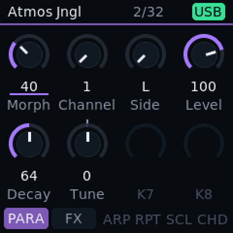
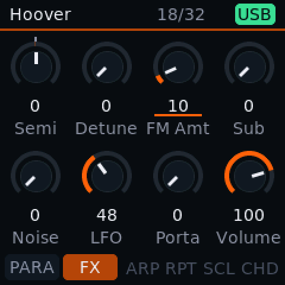
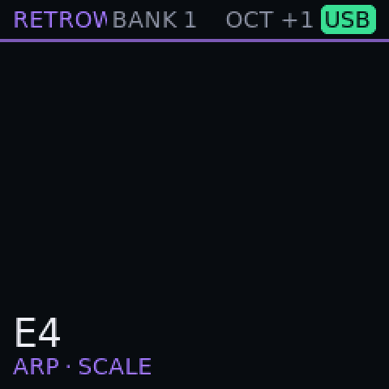
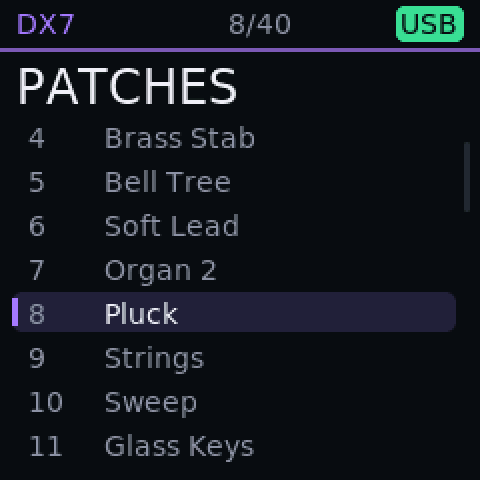

Other synths
The legends in one build, and drums on their own.
Retrowave puts the classic engines side by side and lets you switch between them from the keys. Tympanika and Phantasm are for drum-first music.
What it does
- 1
Five engines, one build Test build
CZ-1, DX7 FM, Juno-60, Moog and MT drums. Hold Oct- and press PATCH to switch; each engine keeps its own patches and banks.
- 2
DX7 FM Test build
The DX7 core of Dexed, 12 notes at once. Load DX7 cartridges and single voices from the installer page.
- 3
Casio CZ Test build
Phase-distortion voices with eight waveforms, and 8, 6 or 4 notes depending on the mode.
- 4
Juno-60 and Moog Test build
Six Juno voices and four Moog voices, each with its own filter knobs, chorus and patches.
- 5
Patches on pads Test build
Pads 9 to 16 recall eight patches per engine, remembered after power-off. Tap to load, hold an empty pad to store.
- 6
FX rack Test build
Up to six effects in layouts you choose, fed from the mixer's sends or inserted into the sound. Delay, chorus, flanger, phaser, reverb, compressor and more.
- 7
MT drums Test build
Eight Microtonic-style channels, each with two stored sounds and a Morph that blends one into the other.
- 8
Tympanika Test build
A drum-only groovebox: the MT engine together with the sequencer's drum track.
- 9
Phantasm Test build
Drums plus tone lanes for jungle, drum & bass and psytrance. The tone lanes are still being added; today it carries the drum engine.
- 10
Plaits-inspired oscillator Planned
A macro oscillator in the spirit of Plaits. Planned, not available.
On the screen



